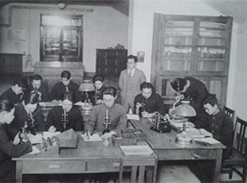

이과대학 연혁
since 1915 1915 ~ 현재
YONSEI UNIVERSITY
COLLEGE OF SCIENCE
-
1915
연희 전문학교 설립 (수물과 창설)
-
1940
연희전문학교 수물과를 이과로 개칭
-
1946
연희대학교 이학원으로 승격
(수학과, 물리기상학과, 화학과 설치)
-
1950
이공대학으로 승격
(생물학과, 전기공학과,
공업화학과, 의학예과 증설)
대학원 개설 -
1957
연희대학교 · 세브란스의과대학
합동 연세대학교 출범 -
1962
이공대학 내에 이학부와
공학부가 분리 설치 -
1965
지질학과 신설
자연과학연구소 설립 -
1967
천문기상학과 신설
-
1968
생화학과 신설
-
1977
이공대학 내의 이학 · 공학부가
각각 이과 · 공과대학으로 분리 -
1983
전산과학과 설치
-
1984
과학관 준공
-
1989
천문기상학과, 천문대기학과로 개칭
-
1994
전산과학과, 컴퓨터과학과로 개칭
-
1995
컴퓨터과학과가 공과대학으로 소속 변경
-
1996
이과대학 단일학부제(자연과학부) 실시
-
1998
천문대기학과, 천문우주학과와
대기과학과로 분리 -
2000
연세과학원 준공
-
2008
이과대학과 생명시스템대학의 분리
-
2012
학과별 모집 전환
-
2015
이과대 창립 100주년
과학관 증축 및 환경 개선 사업 준공
역대학장
-
A.L.becker
연희전문학교 1대 학감-
-
이춘호
연희전문학교 2대 학감-
-
이원철
연희전문학교 3대 학감-
-
최규남
연희전문학교 4대 학감-
-
장기원
이공대학 1대 학장1945. 11 ~ 1959. 3
-
이길상
이공대학 2대 학장1959. 1 ~ 1960. 12
-
최희창
이공대학 3대 학장1961. 1 ~ 1962. 2
-
장기원
이공대학 4대 학장1962. 2 ~ 1963. 4
-
한만춘
이공대학 5대 학장1963. 4 ~ 1973. 2
-
최재시
이공대학 6대 학장1973. 3 ~ 1974. 12
-
김옥준
이공대학 7대 학장1975. 1 ~ 1975. 7
-
한치선
이공대학 8대 학장1975. 7 ~ 1977. 7
역대부학장
- 김장환 이과대학 교학과장 1980.12.01 ~ 1983.02.28
- 김장환 이과대학 교학과장 1980.12.01 ~ 1983.02.28
- 김장환 이과대학 교학과장 1980.12.01 ~ 1983.02.28
- 김장환 이과대학 교학과장 1980.12.01 ~ 1983.02.28
- 김장환 이과대학 교학과장 1980.12.01 ~ 1983.02.28
- 김장환 이과대학 교학과장 1980.12.01 ~ 1983.02.28
- 김장환 이과대학 교학과장 1980.12.01 ~ 1983.02.28
- 김장환 이과대학 교학과장 1980.12.01 ~ 1983.02.28
- 김장환 이과대학 교학과장 1980.12.01 ~ 1983.02.28